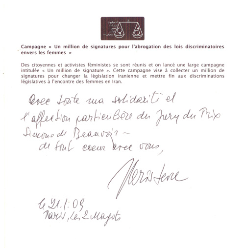

|
|

به همراه یادادشت کریستوا برای کمپین یک میلیون امضا
کند و کاوی در نظریات فمینیستی ژولیا کریستوا
ترجمه و تالیف: فیروزه مهاجر
يكشنبه20 بهمن 1387
ژولیا کریستوا
ژولیا کریستوا در 1941 در بلغارستان متولد شد. در مدرسه راهبان دومنیکن درس خواند و به زبان فرانسه. بلغارستان جزو بلوک شرق بود، به این ترتیب وقتی او در آستانه سال 1965، پس از اخذ دکترا در ادبیات، با یک بورس تحصیلی مخصوص دانشجویان ممتاز به فرانسه رفت با کار فرمالیست های روسی (یاکوبسن و...) و میخاییل باختین که در غرب هنوز ناشناخته بودند آشنایی داشت. کریستوا با این توشه دانش کمی بعد از ورود به فرانسه به عضویت گروه تل کل Tel Quel، یک گروه روشنفکری اهل فلسفه و سیاست که نشریه ای هم به همین نام داشتند، درآمد و با فیلیپ سولرس نویسنده، یکی دیگر از اعضای گروه، ازدواج کرد. بعد از وقایع سال 68 پاریس در 1974 به چین رفت اما مائوییسم چنان دلسردش کرد که تصمیم گرفت سیاست در سطح کلان را رها کند و بعدها مجددا ابتدا به "سیاست ورزی در سطح خرد"، یعنی در سطح فردی و سپس سطح کلان روی آورد. او اخیرا چند رمان هم نوشته است و از جمله رمانی پلیسی.
کریستوا اکنون سرپرست آموزشگاه دکترای زبان، ادبیات و تمدن در شعبه هفتم دانشگاه پاریس است. روانکاوی هم می کند (همان). از جمله جدیدترین آثارش یک سه گانه در مورد زندگی و آثار هانا آرنت [نظریه پرداز امریکایی – آلمانی، 1975-1906]، ملانی کلاین [روانکاو پیشرو آلمانی- انگلیسی، 1960-1882]، و کولت [نویسنده فرانسوی، 1954-1873] است که در 2001 انتشار یافت.
ژولیا کریستوا در نظریه ادبی و اندیشه فمینیستی نفوذ بسیاری داشته، در زیر سعی می کنیم با یاری گرفتن از چند متن فارسی و انگلیسی در دومین حوزه کندو کاوی کنیم.
اولین نوشته ترجمه مقاله ای است به قلم کلی الیور [1]
، که جمع بندی مضامین اصلی کار کریستواست از زاویه ای موافق. پس از مقاله الیور، به سراغ کتاب مک آفی درباره کریستوا می رویم، که اطلاعات زمینه ای بالا را هم از آن گرفته ایم.
شرح مختصر مضامین اصلی
کریستوا و فمینیسم
کلی الیور 1998
گرچه کریستوا به نوشته های خودش عنوان فمینیستی نمی دهد، بسیاری از فمینیست ها به منظور گسترش و تحول دادن به بحث ها و صحبت ها در نظریه و نقد فمینیست به او مراجعه می کنند. سه چیز اندیشه کریستوا بخصوص برای نظریه فمینیست در محیط انگلیسی - امریکایی مهم بوده است:
1. تلاش او برای بازگرداندن تن ((body به گفتمان های موجود در علوم انسانی؛
2. تمرکز او روی اهمیتی که "مادرانه" و "پیشا ادیپی" (preoedipal) در ساخت ذهنیت دارد؛ و
3. برداشت او از خوار شماری (abjection) به صورت توضیحی برای سرکوب و تبعیض.
تن
نظریه های تن بخصوص برای فمینیست ها مهم اند چون به طور تاریخی (در علوم انسانی) تن با زنانه، مؤنث، یا زن، ملازم دانسته شده است، و به عنوان ضیعف، غیر اخلاقی، ناپاک، یا رو به زوال بودن تحقیر می شود. کریستوا در سراسر نوشته های خود در سه دهه گذشته به نظریه پردازی رابطه بین ذهن و تن، فرهنگ و طبیعت، روح و جسم، ماده و بازنمود مشغول بود، با تاکید بر این که رانه های بدنی در بازنمود راه می یابند، و هم این که منطق دلالت پیشاپیش در تن مادرانه عمل می کند. در ناخوشی های جدید روح، کریستوا رانه ها را "محورهای اصلی بین "جسم" و "روح"، بین زیست شناسی و بازنمود" توصیف می کند (ناخوشی های جدید روح: 30؛ نک همچنینززمان و احساس).
اینک شهرت او به خاطر تمایز قائل شدن میان چیزهایی است که "نشانه ای" و "نمادین"می خواند، و در نوشته های اولی اش از جمله انقلاب در زبان شاعرانه، در"از یک هویت به دیگری"، در میل و زبان ، و قدرت های وحشت مطرح کرد. کریستوا معتقد است که تمامی دلالت های معنایی از نشانه و نماد تشکیل شده اند. جزء نشانه ای رانه بدنی است که در معنی راه می یابد. امر نشانه ای با ریتم، آهنگ، و حرکت اعمال دلالت گرانه ربط دارد. امر نشانه ای به مثابه تخلیه رانه ها، به تن مادرانه، نخستین منبع ریتم، آهنگ و حرکت برای تمامی موجودات بشری هم ربط دارد، از آن جا که همه ما در آن تن قرار داشته ایم.
جزء نمادین دلالت معنایی با دستور زبان و ساختار معنی در ارتباط است. جزء نمادین همان چیزی است که ارجاع را ممکن می کند. برای نمونه، واژه ها به دلیل ساختار نمادین زبان دارای معانی ارجاعی اند. از سوی دیگر، می توان گفت که کلمات به دلیل محتوای نشانه ای شان به زندگی معنی (غیر ارجاعی) می دهند. بدون امر نمادین، تمامی دلالت های معنایی چیزی جز وراجی و هذیان نخواهد بود. اما، بدون امر نشانه ای، تمامی دلالت های معنایی تهی خواهد بود و هیچ اهمینی برای زندگی ما نخواهد داشت. سرانجام، لازمه دلالت معنایی هم امر نمادین است و هم امر نشانه ای: هیچ معنایی بدون نوعی تلفیق از این دو وجود ندارد.
درست همان طور که رانه های بدنی به درون معنا راه می یابند، منطق معنا هم درون مادیت بدن فعال است. کریستوا می گوید که تمامی عملیات یکسانی و تفاوت لازم برای معنا، از پیش، بخصوص در به درون خود پذیرفتن و دفع کردن غذا تجسم یافته اند (نک انقلاب در زبان شاعرانه و قدرت های وحشت). این "یکسانی ها" و "تفاوت ها"ی بدنی توسط تن مادرانه قبل از تولد و خود مادر در زمان طفولیت تنظیم شده اند. کریستوا می گوید که یک قاعده یا قانون مادرانه هست که از پیش قانون پدر را که روانکاوی فرویدی وجودش را برای معنا ضروری شمرده است ترسیم می کند ( نک قدرت های وحشت و داستان های عشقی). بدین ترتیب، قاعده یا دستور و قوانین زبان از پیش در سطح ماده فعال اند.
بدن مادرانه
کریستوا، به تبعیت از ملانی کلاین و برخلاف فروید و لکان، بر کار مادرانه و اهمیت آن در شکل گرفتن ذهنیت (سوژگی) و دسترسی یافتن به فرهنگ و زبان تاکید دارد. در حالی که فروید و لکان معتقدند که کودک به یمن کار پدرانه، بخصوص تهدیدات پدرانه در مورد اختگی، وارد اجتماع می شود، کریستوا می پرسد که چرا، اگر تنها انگیزه ما برای ورود به اجتماع ترس است، بیشترمان روانی نیستیم؟ در داستان های عشقی، او تلقی فرویدی - لکانی مبنی بر این که تهدیدات پدرانه باعث می شود که کودک گوشه امن بدن مادرانه را رها کند زیر سؤال می برد. به چه مناسبت اگر تمامی چیزی که پیش چشم دارید ترس و تهدید است این گوشه امن را رها می کنید؟ کریستوا به نخستین مراحل شکل گیری ذهنیت، پیش از موقعیت اودیپی فروید یا مرحله آینه ای لکان، علاقه مند است.
کریستوا می گوید که قاعده مادرانه قانون ماقبل قانون است، ماقبل قانون پدرانه (نک داستان های عشقی). او خواهان یک گفتمان مادری نو است و اهمیت کار مادری را در شکل گیری ذهنیت و فرهنگ مطرح می کند. کریستوا در "Stabat mater " [دعای حضرت مریم که با این کلمات لاتین شروع می شود، که معنی اش "مادر ایستاده" است]، در داستان های عشقی و "مادری از دید بلینی" و میل در زبان، استدلال می کند که ما گفتمان های مادری مناسب نداریم. دین، بخصوص مذهب کاتولیک (که مادر را مقدس می کند)، و علم (که مقام مادر را تا حد طبیعت پایین می آورد) تنها گفتمان های مادری موجود در فرهنگ غرب هستند.
در "مادری از دید بلینی" و جاهای دیگر، کریستوا نظرش این است که عمل مادری را نمی توان به مادر، موجود مؤنث، یا زن، محدود کرد. کریستوا که رابطه مادر با نوزاد را به منزله یک کار می شناسد، کار برآوردن نیازهای کودک را از عشق و میل جدا می داند. یک زن، به عنوان زن و به عنوان مادر، هم عشق می ورزد و هم دارای میل است و به این ترتیب در اصل یک موجود اجتماعی و سخنگوست. به عنوان یک زن و یک مادر، او همواره دارای جنس معین است. اما، تا جایی که کار مادری را به انجام رساند، او دارای جنس نیست. از تحلیل کریستوا چنین بر می آید که تا حدی هر کسی، مرد یا زن، می تواند کار مادری را انجام دهد.
کریستوا، با اصرار بر این که تن مادرانه بین طبیعت و فرهنگ عمل می کند، می کوشد کلیشه هایی را که مادری را به حد طبیعت پایین می آورند خنثی کند. حتی اگر مادر سوژه یا عامل بارداری یا تولد فرزند خود نباشد، او هرگز از این که در اصل یک سوژه سخنگو باشد باز نمی ایستد. در واقع، کریستوا بدن مادرانه را با دو در یکی بودن یا دیگری درونش، به عنوان الگویی برای تمامی روابط ذهنی به کار می برد. مانند تن مادرانه، هر کدام از ما آن چیزی است که کریستوا یک سوژه در فرآیند می نامد. ما در مقام سوژه های در فرآیند همواره با دیگری درون مان مذاکره و مصالحه می کنیم، این یعنی بازگشت سرکوب شده. مانند تن مادرانه، ما هیچگاه کاملا سوژه های تجربه خود نیستیم. برخی فمینیست ها مفهومی را که کریستوا از سوژه در فرآیند دارد بدیلی مفید برای مفاهیم سنتی یک سوژه (مذکر) مستقل یکپارچه دانسته اند.
خوار شماری و جنس گرایی
در قدرت های وحشت، هنگام پرداختن به پاکی و خطر نوشته مری داگلاس [2]. کریستوا مفهومی از خوارشماری را شکل داد که در تحلیل ساز و کار سرکوب بسیار مفید بوده است. او خوار شماری را عملی روانی می داند که طی آن هویت ذهنی و گروهی با طرد هر چیزی که مرزهای خود شخص را تهدید می کند یرساخته می شود. خطر عمده برای کودک نو پا وابستگی او به تن مادرانه است. بنابراین، خوار شماری اساسا مرتبط است با کار مادرانه. طبق ادعای کریستوا در خورشید سیاه، مادرکشی نیاز حیاتی ماست چرا که برای سوژه شدن (درون فرهنگی پدرسالار) ما باید تن مادرانه را خوار بشمریم. اما، چون زنان نمی توانند تن مادرانه را که در آن هویت خودشان به مثابه زن شکل می گیرد خوار بشمارند، بنابراین آن ها به چیزی که کریستوا سکسوالیته افسرده کننده می نامد شکل می دهند (نک خورشید سیاه). تحلیل کریستوا در خورشید سیاه حاکی از آن است که ما نه تنها نیازمند یک گفتمان مادری نو هستیم بلکه یک گفتمان رابطه بین مادران و دختران هم لازم داریم، گفتمانی که لزبینیسم وعشق بین زنان را که از طریق آن سوژگی زنان زاده می شود منع نکند.
کریستوا، در داستان های عشقی می گوید که یکی از علل سرکوب زنان خوار شماری نا به جاست ( ترجمه انگلیسی: 374). در فرهنگ های پدرسالار، مقام زنان تا حد کار مادری پایین آمده است؛ یعنی نقش آن ها به تولید مثل تقلیل یافته. پس، اگر برای سوژه شدن باید کار مادرانه را خوار شمرد، و زنان، مادری، و زنانگی همه به کار مادرانه کاهش یافته اند، پس در پدرسالاری زنان، مادری، زنانگی همه همراه با کار مادرانه خوار شمرده می شوند. این خوار شماری نا به جا راهی است برای توضیح سرکوب و تنزل مقام زنان در فرهنگ های پدرسالار.
فمینیسم
هرچند بسیاری از نظریه پردازان و منتقدان ادبی فمینیست اندیشه های کریستوا را مفید و برانگیزاننده ارزیابی کرده اند، رابطه کریستوا با فمینیسم دوگانه و مبهم بوده است. دیدگاه های او درباره فمینیسم بهتر از همه در پژوهش او "زمان زنان"، در ناخوشی های جدید روح، بازنمایی شده است. در این نوشته که نخستین بار در 1979 منتشر شد، کریستوا استدلال می کند که تا آن مقطع سه مرحله فمینیسم وجود داشته است. او مرحله اول را به دلیل این که در پی تساوی جهانی است و تفاوت های جنسی را نادیده می گیرد رد می کند. کریستوا به طور غیر مستقیم از سیمون دبووآر و رد مادری توسط او انتقاد می کند؛ خود او به جای رد مادری تاکید دارد که ما به یک گفتمان بارداری نیاز داریم. در واقع، در "یک نوع جدید روشنفکر: ناراضی،" کریستوا می نویسد که «نوآوری واقعی زنانه (در هر حوزه ای) تنها وقتی متحقق می شود که بارداری، خلاقیت زنانه و پیوند بین این دو بهتر فهمیده شوند» (298).
کریستوا در ضمن چیزی را که به صورت مرحله دوم فمینیسم می بیند رد می کند چون این فمینیسم به دنبال یک زبان منحصرا زنانه است، که به نظر او غیر عملی است. او با فمینیست هایی که معتقدند زبان و فرهنگ اساسا پدرسالارند و باید به نوعی ترک شوند موافق نیست، برعکس، اصرار دارد که فرهنگ و زبان قلمرو موجودات سخنگو محسوب می شود و زنان قبل از هر چیز موجودات سخنگو هستند. کریستوا چیزی را که به عنوان مرحله سوم فمینیسم می شناسد تایید می کند، یعنی فمینیسمی که در پی اندیشیدن مجدد به یکسانی و تفاوت و رابطه این دو است. این مرحله فعلی فمینیسم از انتخاب یکسانی در برابر تفاوت، یا برعکس، امتناع می کند؛ در عوض، در هویت های چندگانه کند و کاو می کند، از جمله هویت های جنسی چندگانه. در یک مصاحبه با رزالیند کوارد، کریستوا می گوید که به تعداد افراد سکسوالیته وجود دارد.
کریستوا به روایت نوئل مک آفی [3]
مک آفی در کتابش درباره کریستوا که در 2004 منتشر شده، ابتدا اطلاعاتی زمینه ای به ما می دهد، از جمله این که، کریستوا بخشی از سنتی فلسفی است که مفهوم سوبژکتیویته را نقطه آغاز می داند، و در دهه های شصت و هفتاد یکی از اولین متفکرانی بود که پسا - ساختارگرایی را به وجود آوردند (15).
شکل گیری هویت، محدودیت های دلالت معنایی در زبان، تفاوت جنسیت، و امکان وحدت سیاسی حوزه های مهم کار او هستند که از زوایای مختلف و به طور گسترده در آن ها کند و کاو کرده است.
نکات کلیدی در تفکر کریستوا زیادند و از جمله مورد توجه ما می تواند مبارزات زنان و جنبش های اجتماعی باشد. مک آفی می نویسد که کریستوا «با کمال تعجب نظرات چندانی درباره فمینیسم ندارد. و گاهی اوقات هم گونه هایی از فمینیسم را "آخرین ایدئولوژی های قدرت طلب" می خواند، که کاملا تحقیرکننده است» (قدرت های وحشت 1982: 208 به نقل از مک آفی: 120).
یکی از موضوع های عمده در حوزه مسائل زنان مسئله تفاوت جنسی بوده است. بسیاری از فمینیست های فرانسوی از جمله کریستوا معتقدند که میان دو جنس تفاوتی اساسی وجود دارد – نه فقط تفاوت زیست شناختی و روان شناختی بلکه تفاوت در نفس نحوه شکل گیری زنان و مردان، تفاوتی، برای مثال، مشهود در طریقه ای که قلمروی امر نمادین با ساختارهای منطقی ذاتی اش در باب یکسانی... و تفاوت... جایگاه زنان را به عنوان موجوداتی متفاوت از، یا کاملا متضاد با، مردان تعیین می کند (مک آفی: 122). منتقدان کریستوا چیزی از ذات باوری در این اندیشه می بینند که البته مک آفی رد می کند. خواه در مورد نقدها و خواه توضیح مسائلی مانند این که چرا کریستوا می گوید که زن وجود ندارد (همان: 125). او به تاکید کریستوا بر مادری و اهمیت بارداری و بچه داشتن برای خلاقیت زنانه می پردازد، تا توضیح دهد که چرا کریستوا ذات گرا نیست و در واقع «می خواهد بازنمود مادرانگی را بازسازی کند» (همان: 132).

یادداشت کریستوا برای کمپین یک میلیون امضا در پاریس ، هنگام اهدای جایزه سیمون دبووار به کمپین: " با همبستگی و مهر ویژه هیئت داوران جایزه سیمون دو بووار، قلب من با شماست"
مک آفی می نویسد که علاقه کریستوا به تفاوت جنسی او را از نسل پیشین فمینیست ها متمایز می سازد (همان: 145). اما بحث قدرت هم هست. کریستوا می نویسد: «جای تعجب نیست که برخی از دستورکارهای فمینیستی شکست بخورند چون آن ها تلاش می کنند تا با قدرت همانند سازی کنند. چنین تلاش هایی زنان را به ضد قدرتی تبدیل می کند که شکاف های قدرت رسمی را پر می کند – یا از آن ها سرزمین موعودی می سازد که شامل یک جامعه در نهایت هماهنگ است، جامعه ای که تنها مرکب از زنانی است که گمان می شود حقیقت اسرار یک جامعه خیالی فاقد هرگونه تناقض درونی را می شناسند» (147). در هر حال او نه میل دارد زنان در حاشیه بمانند و نه میل دارد که حاشیه ای قلمداد شوند. کریستوا در ناخوشی های جدید روح [4] (1995) سه نسل فمینیست را از هم تفکیک می کند. نسل اول که مربوط به پیش از 1968 می شود جنبشی است که در آن زنان خواستار همان حقوق و امتیازاتی بودند که مردان داشتند (148).
این نسل نخست فعالان زن تلاش کردند تا در همان زمانی که مردان اقامت داشتند ساکن شوند:زمان تاریخ خطی (149). «نسل اول فمینیست ها هرچه را که از مردان متفاوت شان می ساخت انکار می کردند و در مقابل به دنبال همانند سازی با نظم نمادین مردانه بودند. این امر آن ها را، به طرز عجیبی، کاملا پذیرای وضع موجود ساخت» (همان).
کریستوا در مصاحبه ای در سال 1980می گوید که مخالفت ها و اعتراضات زنان باید چیزی بیش از نبردی برای بازشناسایی حقوق باشد (همان: 153). او به این بحث می پردازد که این قلمروی نمادین است که دو جنس را از هم متمایز می سازد. کریستوا، با در نظر گرفتن نظم اجتماعی و نظم نمادین به عنوان دو بعد یک نظام بزرگ (ساختار روانی نمادین) استدلال می کند که مطالبات زنان از راه یکی شدن با این نظام یا با درخواست از نظام برای یکی شدن با آن ها به دست آمدنی نیست (همان).
کریستوا نسل دوم را چنین تعریف می کند: «این نسل مایل به همراهی با نظام موجود نبوده و نیست. مشخصه نسل دوم... "رد و انکار کمابیش کامل زمان مندی تک خطی و بدگمانی به شدت عمیق نسبت به حیات سیاسی" است» (همان، به نقل از گابرمن [5] ). کریستوا در اشاره به بحث هگل در پدیدارشناسی روح که زنان را "طنز ابدی اجتماع" توصیف می کند، می نویسد «نقش زنان را نوعی هشیاری می دانم، یک غریبگی، به صورتی که همواره محافظ و معترض باشند» (156). او دوران هایی را که زنان بتوانند چنین نقشی ایفا کنند می پسندد (همان). اما به اعتقاد کریستوا یک خطر جدی جریان های فمینیستی نسل دوم این است که «هرگونه قدرت موجود را طرد می کنند و از جنس دوم یک ضد جامعه می سازند، نوعی من دیگر برای جامعه رسمی که تمامی امیدها به لذت بردن در آن سنگر می گیرند. این جامعه زنانه می تواند در تقابل با قرارداد اجتماعی – نمادین قربانی خواه و ناکام کننده قرار گیرد: ضد جامعه ای که تصورمی شود هماهنگ، روادار، آزاد، و سرشار از خوشی است» (158، به نقل از گابرمن: 215).
این ضد جامعه خیالی و موهوم با اخراج آن چه آن را مسئول شر می داند از خود محافظت می کند. این ضد جامعه خود را حامل "جوهری نیک" می داند که در تقابل با یک "طرف مقصر" قرار می گیرد. این سپر بلا می تواند "بیگانه، پول، مذهبی دیگر، و یا جنس دیگر" باشد (همان، به نقل از گابرمن: 216). کریستوا می پرسد که آیا این منطق به نوعی از جنس گرایی وارونه منجر نمی شود؟ (مک آفی: 159).
مک آفی می نویسد، کریستوا درباره نسل جدید امیدوار است که زیرک تر باشند و همراه با نسل های بعدی کار دیگری بکنند. به اعتقاد کریستوا «اول این که از رمانتیک سازی "زن" اجتناب خواهند کرد. او "اظهار نظر شرم آور" لکان را تکرار می کند که "چیزی به عنوان زن وجود ندارد." در واقع می گوید که "زن به عنوان حافظ یک تمامیت اسطوره ای، یک قدرت عالی که ترور قدرت و نیز تروریسم به عنوان میل به قدرت بر اساس آن بنا می شوند، وجود ندارد» (همان). مک آفی می نویسد «برداشت یکپارچه نسل دوم از زن فردیت و ویژگی زن امروز را کم رنگ می سازد. کار نسل سوم رسیدگی به فردیت هر زن خواهد بود.» (همان). کریستوا امیدوار است اهداف نسل سوم این ها باشد: «این گرایش امر جنسی را با امر نمادین تلفیق خواهد کرد تا نخست خصوصیات زنانگی و سپس خصوصیت هر زن را کشف کند» (همان). دوم، "نسل آینده به دنبال شیوه هایی خواهد گشت تا امیال چندگانه زنان را با هم آشتی دهد. نسل سوم میل زنان برای داشتن فرزند و وارد شدن به دنیای مردانه زمان خطی – یعنی هم بچه داشتن و هم حرفه داشتن – را جدی می گیرد. هیچ یک از نسل های پیشین زنان راهی پیش روی زنان نگذاشتتند تا آن ها خودشان را هم مولدان نوع بشر و هم خالقان فرهنگ ببینند، یعنی هم مولد تن و هم خالق اجتماع. سوم این که این نسل جدید در کاری که نسل دوم آغاز کرد خود را موثرتر نشان خواهد داد (160-159). کریستوا در باره این نسل سوم می نویسد:
برای این نسل که من به شدت از آن حمایت می کنم (یا این طور تصور می کنم؟)، دوپارگی میان مرد و زن همچون یک ضدیت میان دو رقیب مشکلی مربوط به متافیزیک است. در فضایی علمی و نظری که در آن نفس ایده "هویت" به چالش کشیده شده، هویت و یا حتی هویت جنسی به چه معناست؟ منظور من اصلا یک نگرش دو جنسی که اغلب میل به تمامیت و میل به امحای تفاوت را از خود نشان می دهد نیست. قصد من، به طور مشخص، آرام کردن "نبرد تا دم آخر" بین گروه های رقیب است، اما نه به امید آشتی – چون هرچه باشد، تحسین برانگیزی فمینیسم در این است که آن چه را که در چارچوب قرارداد اجتماعی نمی گنجد و حتی مهلک است آشکار می کند – بلکه به این امید که این خشونت با بیشترین سیالیت در درون هویت فردی و جنسی رخ دهد نه از طریق طرد دیگری (160).
به گفته مک آفی به نظر کریستوا «نسل سوم نیاز خواهد داشت که تشخیص دهد ساختار روانی- نمادین بر متافیزیکی از همانندی و تفاوت، جایی که یک جنس (یا طبقه، نژاد، و ملت) به عنوان یک حریف دیگر به نظر می رسد بنا شده است» (161). اما «کریستوا به جای طرد این ساختار از ما می خواهد آن را درونی کنیم تا آن "جدایی بنیادین از قرارداد اجتماعی – نمادین" را در درون خود بنگریم» (همان).
کریستوا می نویسد «از این پس دیگری نه یک شر بیگانه با من است و نه یک سپر بلای بیرونی، یعنی متعلق به جنبش، طبقه، نژاد، و ملتی دیگر. من هم مهاجم ام و هم قربانی، هم خود و هم دیگری، همسان و بیگانه» (همان). کریستوا با دلیل و برهان نشان می دهد که چطور درونی سازی رقابت های این ساختار به تغییر شکل ساختار کمک خواهد کرد. او معتقد است این فرایند هرشخصی را مسئولیت پذیر خواهد کرد.«من مجبورم بی وقفه جدایی بنیادین از هویت غیر قابل دفاع خود را تحلیل کنم» (همان).
مک آفی می نویسد، بحث های کریستوا درباره نسل سوم بیشتر معطوف به دستاوردهایی است که می توانند برای نوع بشر داشته باشند و نه زنان. در ناخوشی های جدید روح او عمدتا نگران این است که ما دیگر یک باغ درون، جایی که بقامان حفظ شود، پرورش یابیم، و به درکی از وجودمان نائل آییم ندارم (172). او می نویسد «تن قلمرو نامرئی روح را تسخیر می کند» [6]. راه حل از نظر او سرپیچی است. در جامعه بشری سرپیچی فرهنگی خاص خود دارد و کریستوا نگران آن است که همین هم دارد از بین می رود. به نظر او سرپیچی برای روان و جامعه ضروری است. او در معنا و بی معنایی سرپیچی [7]. در این باره بحث می کند که ما نباید بگذاریم فرهنگ نمایش جای فرهنگ سرپیچی را بگیرد (177). منظور تبدیل همه چیز به بازنمود است و همه چیز شدن بازنمود. کریستوا می نویسد، « شادمانی تنها به قیمت سرپیچی به دست می آید. هیچ یک از ما بدون رو در رو شدن با یک مانع، ممنوعیت، اقتدار، قانونی که به ما مجال دهد تا خود را به صورتی آزاد و مختار دریابیم، لذتی در اختیار نداریم. سرپیچی به وجود آمده تا تجربه شخصی شادمانی را که بخش جدایی ناپذیر اصل لذت است همراهی کند. علاوه بر این در سطح اجتماعی، نظم هنجارساز هرگز کامل نیست و قادر نیست که از مطرودان محافظت کند:... وقتی ... فرهنگ سرپیچی نداشته باشند، مجبور می شوند خودشان را با ایدئولوژی ها، با نمایش ها و تبلیغاتی سرگرم کنند که لذت طلبی آن ها را اصلا ارضا نمی کند، بدل به آشوب طلب می شوند» [8] (178).
به اعتقاد کریستوا، دو نوع سرپیچی فرویدی، یعنی، سرپیچی اودیپی و بازگشت به کهن الگو، به سه شکل از سرپیچی اشاره دارند. 1. سرپیچی به منزله تخطی از یک ممنوعیت؛ 2. سرپیچی به منزله تکرار، پردازش، و طرح ریزی و 3. سرپیچی به منزله جابجایی، هم آمیزی ها، و بازی ها (182). کریستوا برای تحلیل سه نویسنده قرن بیستم، ژان پل سارتر، لویی آراگون، و رولان بارت، این بن مایه ها را به کار می گیرد (همان). کریستوا، بارت را یک شورشی می داند چون او در تلاش بود معنی متون (از جمله "متن" مد) را که دیگران طبیعی می یافتند تخریب کند و تغییر دهد (همان). [9] «کریستوا می نویسد بارت این پرسش را مطرح کرد که "آیا انسجام و وحدتی – یک من، یک ما – وجود دارد که معنایی را در خود داشته باشد یا در جستجوی معنایی باشد"» [10] . سرپیچی بارت در برابر وحدت و انسجام هر معنایی، خواه تولید شده یا تولید کننده، است (همان). پیداست که سرپیچی از هر نوع نباید غالب شود (183). چون این پایان موجودیت شخص به عنوان سوژه سخنگوی منسجم خواهد بود (همان).
مک آفی می نویسد، بنابراین، کریستوا به چیزی کم تر از یک انسانیت جدید رضایت نمی دهد، انسانیتی که هر فردی می تواند با آن خصوصیات خویش را ابراز کند و در عین حال هنوز بخشی از طایفه خود باشد. کریستوا به راهی برای خروج از مهلکه گزینه های موجود در دوران معاصر – یا دفاع از حقوق جهانی بشر یا دفاع از تفاوت های هویتی متمایز – اشاره می کند. برای این کار ترجیح می دهد با توجه به حرفه اش به عنوان روانکاو از سیاست در سطح کلان به سیاست در سطح فردی روی آورد (184) و از "چیزهای کوچک"، "مفروضات کوچک"، شروع کند . [11] (185) و عمدتا از سوژه سخنگو، و امور شخصی را به همان اندازه سیاسی هم می داند. از این زاویه، به ضرورت بنیادی سرپیچی روان شناختی اشاره می کند – سرپیچی از هویت، تجانس بخشی، نمایش، و قانون. کریستوا می گوید، اگر ما قلمروی درونی، یک باغ مخفی، زندگی ذهنی را زنده نگه نداریم، احتمال اندک برای هرگونه سرپیچی سیاسی با معنایی باقی می ماند. هر انقلاب دیگری هم به بوروکراسی سازی و ترور منجر خواهد شد، مگر این که فرد خصوصیت اش را حفظ کند و روح اش را زنده نگه دارد. حداقل، این درسی است که از بسیاری از "انقلاب" های قرن بیستم – و شورش های اخیرتر ملی و قومی این روزگار – می توان گرفت (همان).
مک آفی در موخره کتابش می نویسد، ترجیح می دهد کریستوا را فیلسوفی بداند که به حوزه های ادبیات و روان کاوی وارد شده، و تاثیری اساسی بر فلسفه قاره اروپا داشته است (196). سپس او به کسانی که از کار کریستوا تاثیر پذیرفته اند می پردازد، از جمله کلی الیور که ترجمه مقاله کوتاهی از او درباره کریستوا در آغاز این نوشته آمده است. دیگر چه می توان گفت جز این که، اندیشه فمینیستی، اخلاق، نظریه فرهنگی و زیباشناسی، مطالعات سینما و جامعه شناسی، سیاست، دین و... از جمله حوزه های تفکری است در غرب که اندیشه های کریستوا به آن راه یافته است.
يادداشت
[1] .Kelly Oliver (1998), "Kristeva and Feminism," in:
www.cddc.vt.edu/feminism/enin.html
[2] .Mary Douglas 1969), Purity and Danger, New York: Routledge
[3] نوئل مک آفی (1385)، ژولیا کریستوا، ترجمه مهرداد پارسا، نشر مرکز 1385.
[4] Kristeva, Julia (1995) New maladies of the Soul, trans. Ross Guberman, New York: Columbia university Press. P. 9.
[5] Guberman, Ross (ed.) (1996) Julia Kristeva Interviews , New York: Columbia University Press. P.128.
[6] New maladies of the Soul, P. 9.
[7] Kristeva, Julia (2000) The sense and Non-sense of Revolt: The Powers and Limits of Psychoanalysis, Vol. 1, trans. Jeanine Herman. New York: Columbia University Press. P. 7
[8] همان
[9] همان، صص 189-188.
[10] همان
[11] Guberman, p. 15